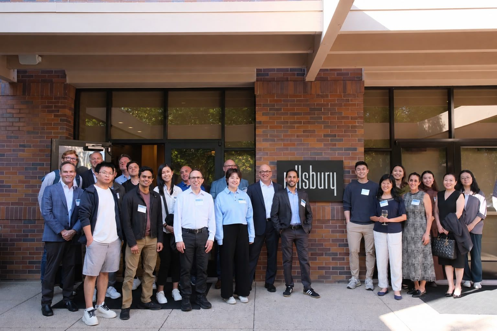

01Review
AI Transformation Review
Curated industry updates with practitioner takeaways.
Subscribe here ↗The Frontier Community for AI Transformation in Law
Founded in Silicon Valley since 2025
A practitioner-driven legal AI community connecting 1,000+ professionals across the US and Asia — where lawyers and builders meet to shape an AI-native legal profession.

Community record / 2025—2026
Founded in Silicon Valley
Legal Tech Frontier is a practitioner-driven community for the people building the future of legal work. Founded in Silicon Valley, we connect 1,000+ attorneys, in-house counsel, legal ops professionals, and legal tech builders across the US and Asia.
Since 2025, we've hosted 13 in-person gatherings — from Stanford and Facebook House to New York, Beijing, Shanghai, Shenzhen, Hong Kong, and Tokyo — where practitioners share what's actually working with AI in legal practice. No hype, no vendor pitches — just honest conversations between the people doing the work.
Community practice
Curated industry updates with practitioner takeaways.
Subscribe here ↗Regular gatherings for networking and knowledge sharing.
Hands-on sessions on AI tools and workflows for legal practice.
Field notes
Closed-door, invite-only roundtables for firm and legal-department leaders.
Pillsbury Winthrop Shaw Pittman LLP, Palo Alto, CA
 Dec 2025
Dec 2025HSF Kramer, Hong Kong
 Nov 2025
Nov 2025Han Kun Law Offices, Beijing
Deep dives on what an AI-native legal practice actually looks like.
Our early community gatherings across the US and Asia.
 Mar 2026
Mar 2026Tokyo, Japan
 Mar 2026
Mar 2026Tokyo, Japan
 Jan 2026
Jan 2026Facebook House, Los Altos, CA
 Dec 2025
Dec 2025White Magnolia Plaza, Shanghai
 Oct 2025
Oct 2025Stanford University, Palo Alto, CA
 Sep 2025
Sep 2025San Jose, CA
 Aug 2025
Aug 2025Santa Clara, CA
Legal Tech Frontier × UC Berkeley RDI
Legal Tech Frontier is collaborating with the Agents’ Last Exam team at the Center for Responsible, Decentralized Intelligence (RDI) at the University of California, Berkeley on an independent, open-source benchmark for legal agents — built by experienced lawyers on real cases.
In partnership with Legal Tech Frontier
The project announcement from the Center for Responsible, Decentralized Intelligence.
rdi.berkeley.edu ↗ 02 · ALE Page55 occupations and 1,500+ tasks, each sourced from a real project a working professional actually completed.
agents-last-exam.org ↗ 03 · Latest notificationWhat we are doing, who has joined, and the open call for an Engineering / Research Lead.
Read the announcement ↗Hosted together
Universities, law firms, and communities that have hosted, sponsored, or supported our meetups across the US and Asia.
 Stanford University
University of California, Berkeley
Stanford University
University of California, Berkeley
 Peking University
Peking University
 Cooley LLP
Pillsbury
Cooley LLP
Pillsbury
 Herbert Smith Freehills Kramer
Herbert Smith Freehills Kramer
 Han Kun Law Offices
Han Kun Law Offices
 Facebook House
Facebook House
 Asian American Bar Association of New York
skills.law
Asian American Bar Association of New York
skills.law
 WaytoAGI
WaytoAGI
 Linkloud
Linkloud
Listed in no particular order. Logos and trademarks belong to their respective owners.
1,000+ professionals
Join the Legal Tech Frontier Community and connect with 1,000+ legal tech professionals exploring how AI is transforming the legal industry.
If you're curious about the future and want to meet people who are thinking deeply—we'd love to have you.
Across the US and Asia
Reach out to the people building and growing the Legal Tech Frontier community.

Founder
Helen Fan is a Silicon Valley–based lawyer and legal AI strategist trained at Columbia Law School.
LinkedIn ↗
APAC Lead
Lawyer-turned-builder and creator of the open-source anti-distill project, featured in MIT Technology Review. Drives Legal Tech Frontier's growth across the Asia-Pacific region.
LinkedIn ↗